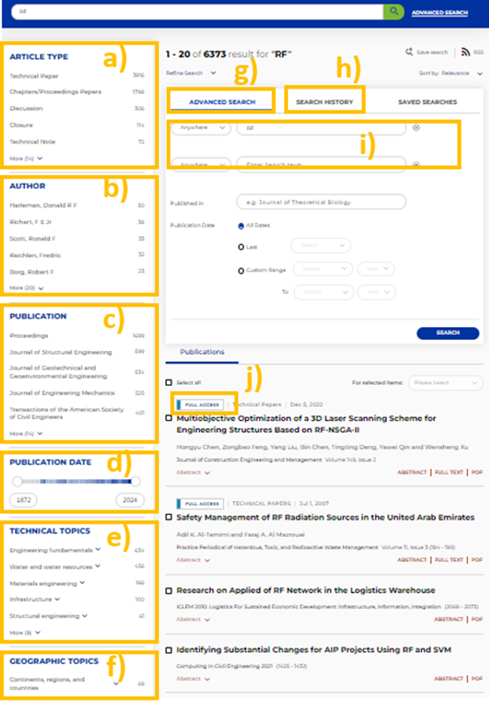

About ASCE
Overview
The American Society of Civil Engineers (ASCE) was established in 1852 and is one of the earliest scientific and technological societies in the United States. ASCE serves over 150000 professional members in 177 countries and has cooperation agreements with 65 civil engineering societies worldwide. ASCE publishes over 50000 pages of professional journals, magazines, conference proceedings, monographs, technical reports, practical manuals, and standards annually. As a leader in the field of civil engineering, ASCE publications are comprehensive and authoritative, and its journals are important core journals in the field of civil engineering.
Covering Disciplines
Mechanics、Management、Structural、Construction、Environmental、Urban Planning、Geotechnical、Water Resources、Hydraulic、Coastal and Ocean、Aerospace、Materials、Architectural、Professional Issues、Energy、Transportation、Infrastructure、Computing in Civil Engineering
Develop History
On Nov. 5, 1852, a dozen eminent civil engineers gathered at the Croton Aqueduct in New York City, in the office of Chief Engineer Alfred W. Craven, to establish the American Society of Civil Engineers and Architects. In 1868, a few years after architects had formed a professional society of their own, ASCE adopted its current name. For the first 144 years of its existence, ASCE maintained its headquarters in New York City, relocating six times to progressively larger facilities. In 1996, ASCE moved its global headquarters to Reston, Virginia, just outside Washington, D.C.
Content Types
Journals and Periodicals
The technical and professional journals of the Society are the media through which independent researchers report their experiences and the results of their studies for the advancement of the civil engineering profession. Technical content is carefully peer-reviewed for possible publication in one of ASCE’s journals and periodicals.
E-books
ASCE e-books provide state-of-the-practice information and guidance on today’s engineering methods and technologies, from design and planning through application in the field. The collection includes ASCE Standards, Manuals and Reports on Engineering Practice, Committee Technical Reports, and ASCE Press titles.
According to the latest Journal Citation Report (JCR), 34 journals have been indexed by SCI.22 journals with impact factors exceeding 2.The impact factors of 14 journals are higher than the median of all civil engineering journals and belong to the first or second zone of this category of journals.
The average growth rate of the impact factors in 2021 compared to 2020 is 15%.
Number of Collections and Upadate Frequency
The ASCE Library is the world’s largest full-text database of civil engineering research and practical publications. It offers unprecedented online access to more than 200,000 technical and professional papers—2.5 million pages of content. More than 5,000 papers are added annually.
Resources Already Ordered by Library
- 35 ASCE journals (1983 to present); ASCE proceedings (over 700 volumes, 1996 to present); Two well-known magazines (Civil Engineering Magazine and GEOSTATA Magazine) added in 2022.
- More than 400 e-books (1985-2020) covering topics such as engineering project management, construction, environmental engineering, urban planning, geological technology, and urban planning. This includes the Technical Council on Lifeline Earthquake Engineering Monographs (TCLEE) series, the Technical Council on Cold Regions Engineering Monographs (TCCRE) series, the Council on Disaster Risk Management (CDRM) series, as well as a series of technical reports, practice manuals, and special publications.
Login/Register
Access link: https://ascelibrary.org/
A. Registration login method:
There are two ways to login or register.
(a) Individual Login/Register:
- If you have an account, you can login directly; If you do not have an account, you need to register a new one.
- Register a New Account:To register for a new account, you need to register by email. Then enter personal information, contact information, and set a new account password.
You can log in through an institution, you need to enter the name of the institution you belong to and agree to the information provision agreement.
B. Off-campus access
There are two methods of off-campus visits:
(a) Off-campus access to ASCE requires the use of Southeast University SSL VPN
(b) Access ASCE through CAESI (CERNET Authentication and Resource Sharing Infrastructure)
CAESI's access link is https://www.carsi.edu.cn/.
Select “User Login” and enter “University name or Institution name”.
Select ASCE from the Service provider (SP).
Data Download and Upload
The ASCE database has a wealth of literature available for download and reading, as well as convenient citation functions. The specific operating steps are as follows：
- Log web of science website "https://ascelibrary.org/" within the scope of school IP.
- Use the search bar, enter keywords, the paper's title, author names, or any other relevant information related to the paper.
- Refine search, use filters and sorting options to refine search. These filters may include publication date, publication type, and more.
- Click “Abstract” to read abstract of the paper.
- Click “PDF” to read paper in detail.
- Select one or more required papers
- Select export and choose " For selected items: ".
- Select record content as "Export Citations".
- Select export “Format” and click the "DOWNLOAD" button.
Tip: The downloaded citation needs to be used in conjunction with software such as EndNote.
Retrieval technique
A. Set up email alerts.
Select the publications you are interested in and set email alerts at different frequencies.

B. Narrow the scope of literature search. 
- Filter Article Type in one search result.
- Filter Author in one search result.
- Select the publication you want to retrieve.
- Choosing the publication year in the dark range is conducive to finding the mature research results with high attention.
- Choose the appropriate Technical Topics.
- Select the relevant country or region.
- Advanced search can be used to increase the search terms and find the corresponding literature more accurately.
- The Search History can help to find previously used search fields.
- The added fields can be Title, Author, Keywords, etc. When searching for an author, you can search for the name of the author's work institution or the zip code of the school.
- Search results with a "Full Access" identifier are where you are institutions have ordered the content, you can download the full text.
C. Search techniques for Proceedings.
- Retrieve Proceedings by Topic.
- You can sort by the date of the Proceedings or by the alphabet.
- The proceedings of the same meeting are organized into several volumes by agenda topic, and the general table of contents can be seen under the icon.
Resources and Features
Due to the extensive content in the resource library related to the construction engineering field, it provides a vast number of standards.
- After logging in, click on the “standards” in the “books” dropdown menu.
- On the left side of the page, you can add filtering criteria (such as the first letter, publication date, etc.), and on the right side, it will display all the standards that meet the criteria.
e.g: Minimum Design Loads and Associated Criteria for Buildings and Other Structures, ASCE/SEI 7-22.
Advanced Features
New content alerts: Journal alerts. You can select the journals you are interested in and receive emails of the latest content regularly (daily, weekly, or monthly).
- After logging in, go to the 'User Services' interface.
- Click on 'Content Alerts' in the sidebar.
- Choose the email delivery frequency and the books or journals you are interested in, and finally click the “submit” button.
Experiences and Recommendations Based on User Feedback
Based on my own user experience, I believe there are some areas that can be improved.
- Fuzzy search: Due to differences in language and personal foreign language proficiency, I may not be clear about how to accurately express a professional vocabulary in English, and there may be discrepancies between the searched literature and the expected results. If fuzzy search or multilingual search functions are supported, this problem may be avoided.
- Collection function: Due to the use of institutional login, I need to log in to my personal account to collect literature, but I am unable to view the full text and download literature under my personal account. In this case, it is necessary to download the literature to achieve the purpose of saving, but sometimes my collection of literature only serves as a secondary screening function.
- Reference: When I want to cite this article, I cannot directly obtain the citation format. I must first download and import the citation file into another software. This brings convenience for writing papers with batch citations, but if I only want to annotate the citation source, such as using an image of this article in the PPT, the citation in this case is very inconvenient.